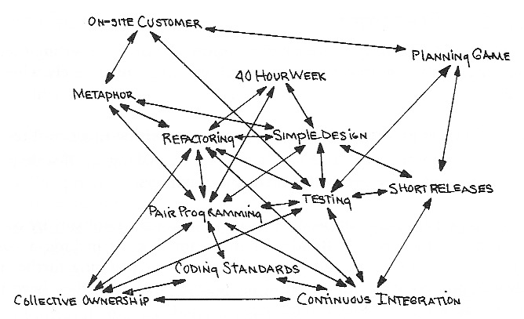

Enkelt som blev lätt
Jimmy Larsson - @jimlar
Tack till Rich hickey
Extreme programming
© Kent Beck - Extreme Programming Explained
Simplicity is prerequisite for reliability
- Edsger W. Dijkstra
Liten ordlista
Enkel - Simple
- Motsats till komplicerad
- En uppgift
- En roll
- Ett koncept
- En dimension
- Ej sammanflätad
- Men INTE en förekomst
Objektivt!
Lätt - Easy
- Motsats till svårt
- Nära till hands
- Redan känt
- Lätt att komma igång/ladda ner
- Som icke vållar större besvär
- Icke mödosamt
Subjektivt!
Våra begränsningar
- Vi måste förstå för att göra rätt
- Vi kan bara tänka på en begränsad mängd saker i taget
- Sammanflätade saker behöver tänkas på tillsammans
- Lätt att skapa mer komplexitet än vi kan förstå
- Alla befinner sig statistiskt sett på samma nivå
Konstruktion och artefakt
- Stort fokus på upplevelse av konstruktion
- Smidighet för programmerare - hur lätt?
- Ersätta programmerare
- Mindre fokus på den långsiktiga användningen
- Kvalitet och korrekthet
- Underhåll och förändring
Utvärdera konstruktionen genom dess artefakt!
Lätt men komplext?
Lätt eftersom vi är vana vid det - vi tänker inte på komplexiteten det skapar
Verktygslåda för komplexitet
| Konstruktion | Sammanflätar |
|---|---|
| Tillstånd | Allt som kommer i kontakt med tillståndet |
| Objekt | Tillstånd, identitet och värde |
| Metoder | Funktion och tillstånd, namnrymd |
| Arv | Typer |
| Variabler | Värde och tid |
| Imperativa loopar | Vad och hur |
| ORM | OMG |
Verktygslåda för enkelhet
| Konstruktion | Fås genom |
|---|---|
| Värden | Språk, "final", persistent collections |
| Funktioner | Tillståndslösa metoder |
| Data | Maps, arrays, sets, JSON etc. |
| Köer | Bibliotek |
| Deklarativ datamanipulation | SQL/LINQ/Datalog |